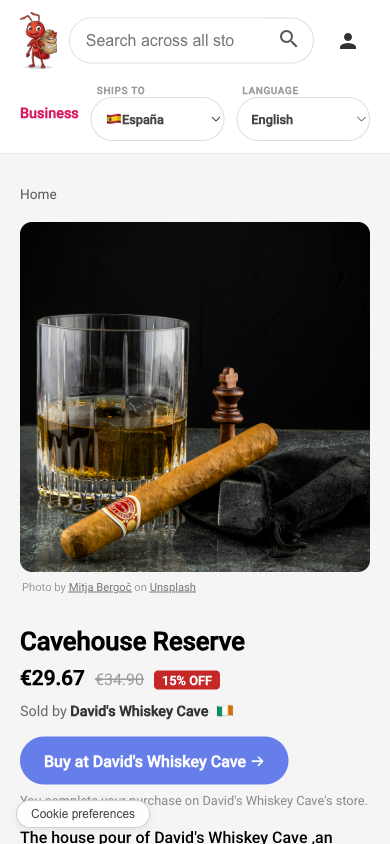
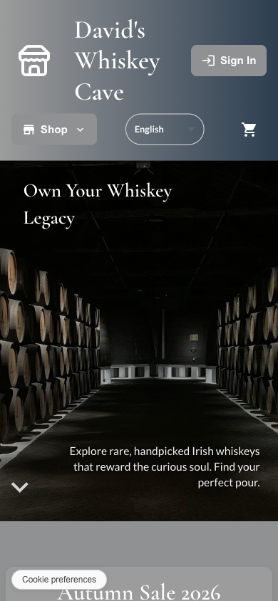
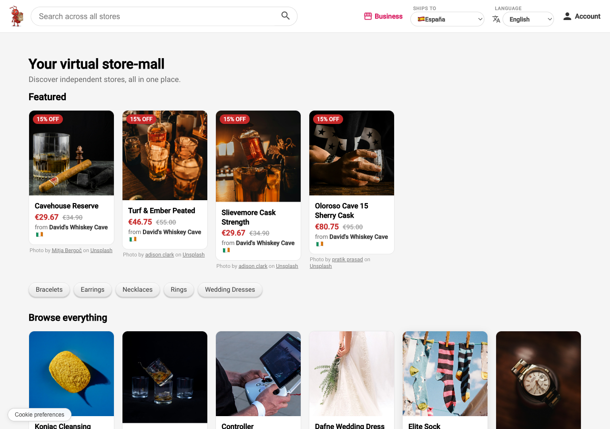
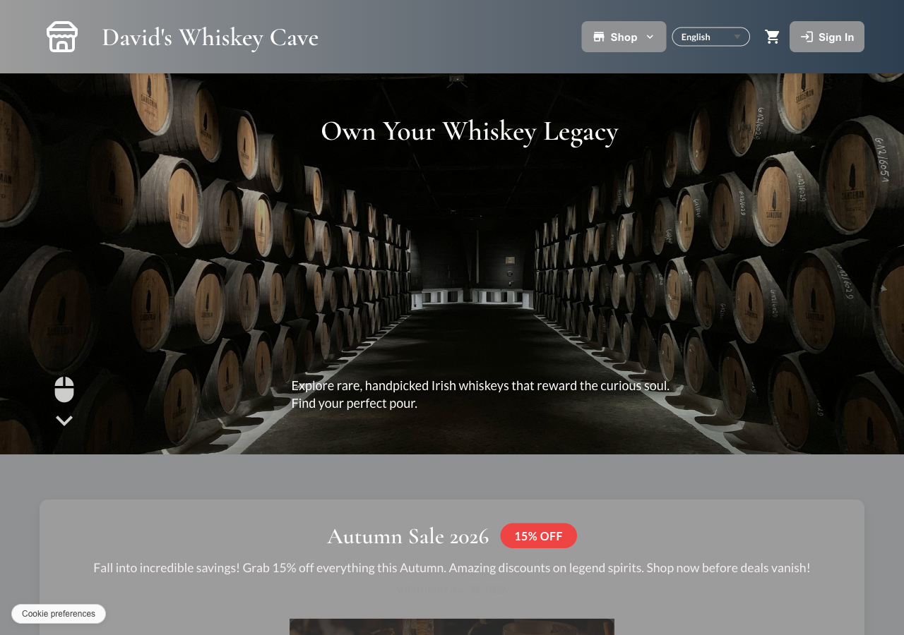

Cada tabla que guarda datos de una tienda lleva un store_id,
y la seguridad a nivel de fila de Postgres impone el límite dentro de la
propia base de datos — no en código de aplicación que podría tener un
fallo. La única excepción deliberada es el catálogo del propio mercado:
lee de todas las tiendas sin ese filtro, pero solo productos activos de
tiendas que han decidido aparecer publicadas. Un pedido o un dato de
cliente nunca cruza esa línea.

Store·Mall está hecha para el mercado de la UE. La plataforma en sí, el lado del administrador y los registros que guarda, trabaja en dos idiomas canónicos: inglés y español. Las tiendas hablan con sus compradores en ocho: inglés, español, portugués, alemán, francés, italiano, neerlandés y polaco, que por el idioma oficial de cada estado miembro cubren a aproximadamente cuatro de cada cinco personas en la UE.
El contenido del catálogo y los textos de las tiendas los traduce Claude, sobre todo con el modelo más pequeño, Haiku, hacia una columna que el dueño de la tienda revisa después, no aprueba antes. Cada texto lleva una etiqueta — Nativo, Revisado o Automático — para que quien compra sepa qué está leyendo.
Los dueños de tienda inician sesión con su propio sistema de autenticación, completamente separado del que usa quien compra. Desde ahí gestionan productos e inventario, procesan pedidos, configuran el tema y el envío de la tienda, lanzan promociones y usan las herramientas de IA integradas para descripciones y contenido. La primera vez, una guía de cinco pasos acompaña al nuevo dueño por el catálogo, la marca, los mercados y el dinero, el envío y las páginas legales antes de que la tienda pueda publicarse. Conseguir una cuenta de dueño todavía necesita aprobación — de momento no hay alta autoservicio en ese lado.
Lo difícil no fue traducir el texto, sino decidir qué queda como referencia cuando dos personas escriben en idiomas distintos y a una de ellas se le está haciendo una pregunta de cumplimiento normativo. Un administrador — que solo trabaja en inglés — puede preguntarle a un futuro dueño de tienda algo como "¿tienes licencia para enviar alcohol dentro de la UE?". Ese dueño puede estar en cualquier punto entre Varsovia y Lisboa. Traducir eso sin cuidado introduce ambigüedad en un registro legal.
Así que el administrador siempre escribe y lee en inglés, sin excepción. Todo lo que se envía a un dueño se traduce en el momento en que se despacha, no en el momento en que se escribe — derivado del mercado de la tienda, no de un idioma que el dueño tenga que elegir. El dueño responde con sus propias palabras, y esa respuesta se guarda tal cual se escribió; la versión en inglés que ve el administrador es una traducción de cortesía superpuesta, nunca un sustituto. Cualquiera de las dos partes puede ver siempre el original.
Esa separación — un texto de referencia, una traducción encima, decidida una vez y aplicada en un único punto — es lo que permite añadir el idioma de un mercado nuevo sin tocar el lado del administrador. La limitación de dos idiomas en el equipo de administración no es algo que la plataforma esquiva; es justo lo que ese diseño vuelve irrelevante.
Angular 22 — standalone, sin zonas, con signals — sobre un backend en Express/Node. Supabase para Postgres, autenticación y almacenamiento. Stripe para los pagos. Alojado en Vercel y Railway. Unas 80.000 líneas, en un repositorio privado.
Está en vivo en store-mall.com/mall — puedes echar un vistazo. Todavía no hay ningún negocio real ahí; las tiendas son de demostración, en el lugar de las reales para las que está pensado.